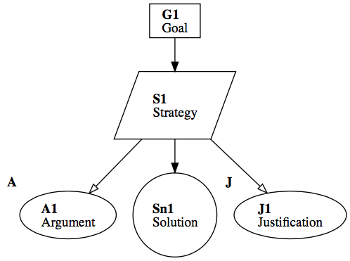

Research Summary
This page is about the research activities during my PhD (Formal Verification of Complex Probabilistic Systems)
My background and experience are on the formal verification of probabilistic systems. The study relies on the following themes:
- Probabilistic Model-Checking
- Symbolic and bounded Model-Checking
- Compositional Verification
Many real-world critical systems are modeled with large-scale representations and exhibit both probabilistic and non-deterministic behavior.
Verifying such systems requires techniques that mitigate the state space explosion problem.
Symbolic model checking and compositional verification, such as assume-guarantee reasoning, are two promising approaches to address this challenge.
During my PhD, we proposed:
- Probabilistic Symbolic Compositional Verification (PSCV) , an approach for verifying probabilistic systems where each component is a Markov Decision Process (MDP). PSCV encodes system components using compact data structures and establishes symbolic compositional verification through a sound and complete symbolic assume-guarantee reasoning rule. To ensure completeness, assumptions are modeled using interval MDPs. Additionally, we introduce a symbolic MTBDD-learning algorithm to automatically generate symbolic assumptions and utilize causality to produce minimal counterexamples for refining conjectured assumptions.
- Implicit Learning for the Compositional Verification of Markov Decision Processes . This work employs a sound and complete symbolic assume-guarantee reasoning rule to establish a compositional verification process, using the CDNF learning algorithm to automatically generate symbolic probabilistic assumptions.
Research Topics
-

Large Language Models (LLMs) have revolutionized natural language processing, enabling high-quality content generation. However, they remain prone to hallucinations, instances where generated outputs deviate from factual truth.

Our approach integrates Beam Search Sampling (
BSS) with Semantic Consistency Analysis to identify factual hallucinations. Unlike traditional stochastic generation methods, which can introduce variability without providing clear confidence estimates, our method systematically generates multiple candidate responses usingBSS. Specifically, we generate a new beam if the model exhibits uncertainty in its previously generated tokens, allowing for the exploration of diverse, yet high-probability, outputs. This approach mitigates the need to generate a fixed number of responses and adapts to the model’s token-probability level. Once the responses are generated, they are clustered based on semantic similarity, ensuring that differences in phrasing do not obscure factual inconsistencies. To assess the factual consistency, we employ an \( \mathcal{NLI} \) model to compute entailment \( \mathbb{E}(C_i, C_0) \) and contradiction \( \mathbb{C}(C_i, C_0) \) scores between the different clusters and the LLM-generated answer (\( a_0 \)). Finally, the Hallucination Score is computed by combining cluster probability score \( \Phi_{\mathcal{C}_i} \) with entailment/contradiction scores, resulting in a final score that flags potential factual hallucination.
Research Topics
-
